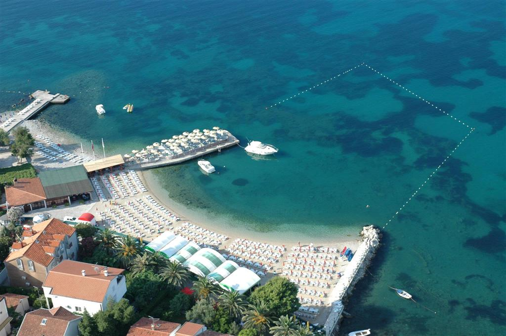
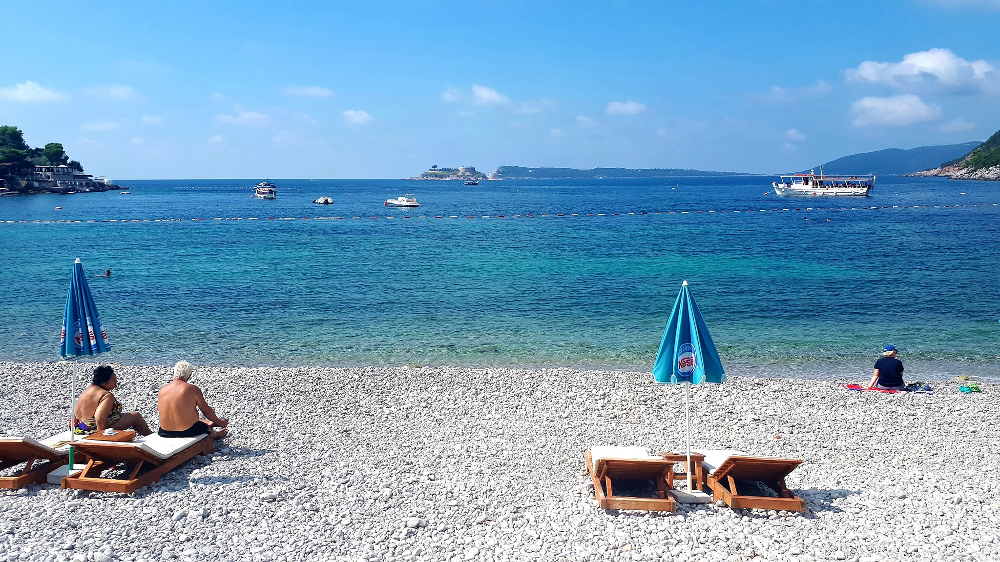
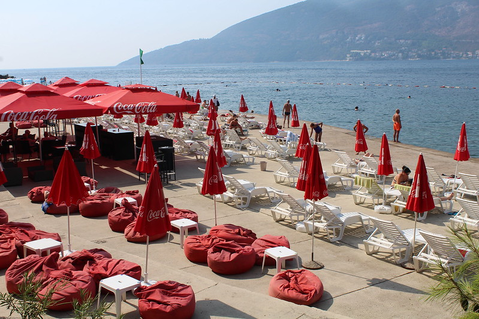
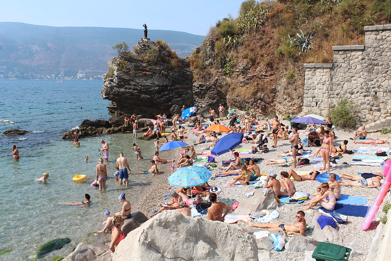
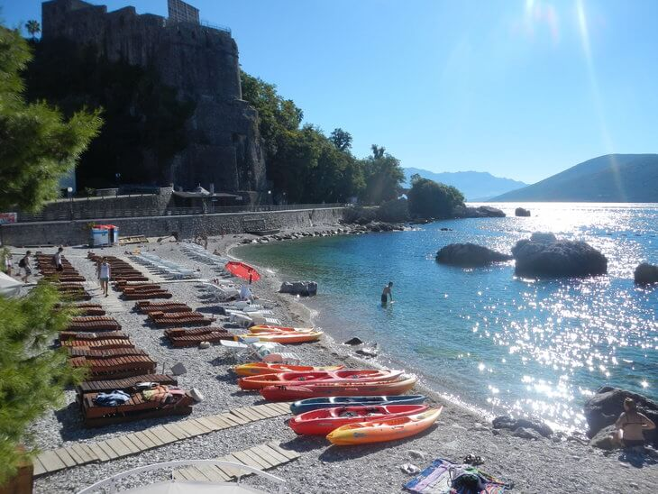

TOP 8 NAJBOLJIH PLAŽA U IGALU - HERCEG NOVI
Pješčana, šljunčana, stjenovita ili možda betonska plaža?
Igalo je poznato, prije svega kao turističko mjesto, a zahvaljujući morskom mulju sa Blatne plaže, centar je zdravstvenog turizma Crne Gore. Duž šetališta i plaže, veliki je broj kafića i restorana koji mame mirisima ribljih specijaliteta, dobrom muzikom i prijatnim ambijentom.

Opština Herceg Novi ima 25 km obale i 62 registrovane plaže jedan je od razloga zašto je jedno od najpopularnijih letovališta u Crnoj Gori. Od malih intimnih skrivenih plaža među stenama, do većih betonskih betona sa ležaljkama i suncobranima.
U ljetnjim mjesecima (jul, avgust) grad ima oko 10,7 suncanih sati dnevno. Temperatutra mora kod Herceg Novog tokom ljeta iznosi 22 do 26 stepeni, i uz priblizno istu temperaturu vazduha omogucava kupalisnu sezonu koja traje i do 5 mjeseci.
Odabrali smo nekoliko plaza za koje smatramo da su najzanimljivije i najlepše plaze u Igalu i Herceg Novom.
BLATNA PLAŽA IGALO
Ovo je javna plaža. Nalazi se u Sutorini, udaljena oko 3 km od Herceg Novog. Osim što je najveća na Hercegnovskom području (površine 9000 m2), važi za plažu banjskog tipa po sastavu je peščana i sastavljena od vrlo lekovitog peska. Plaza stara banja je preporucena plaza za porodicu sa malom djecom. Plitko i veoma prijatno za igru sa djecom.. lezaljke i suncobrani najpovoljniji na cijeloj obali. A u blizini i restoran sa ukusnom hranom . Dnevni meni 4€ jeftino i ukusno.

PLAŽA RAFFAELLO
Ova plaža važi za najbolju i najatraktivniju plažu u Herceg Novom. Vrlo popularna peskovito-šljunkovita plaža na granici Herceg-Novog i Igala. Nalazi se u dijelu grada koji se naziva Topla što joj je i pravo ime za razliku od komercijalnog pod kojim je poznatija. Nasuta je pijeskom, površine 3.000 m2, Blizu plaže postoju kafići i restorani, plaža je opremljena svim neophodnim elementima, postoji mogućnost iznajmljivanja ležaljki i suncobrana..

LA BAMBA IGALO
Ova plaza je velika i nalazi se u najpopularnijem delu na granici Igala i HN. Usluga je dobra, plaza je uredjena, prilaz vodi je nezgodan jer odmah ulazite u dubinu (oko 1m) sa betonske ploče. Poseduje mini vodeni park kao i mogucnost iznajmljivanja skutera, pedolina i drugog zanimljivog sadrzaja. U sklopu plaže nalazi se i kafić gde možete predahnuti sa prijateljima.

Ova fotografija je u vlasništvu TripAdvisora
PLAŽA ZANJICE (plaža Žanjic)
Plaža Žanjice važi za jednu od najlepših u Bokokotorskom zalivu. Do plaže Žanjice se može doći morem ili kopnom . Nalazi se na poluostrvu Luštica s druge strane ulaza u zaljev i najbolje je stići brodom iz Herceg Novog do plaže .Kako su Žanjice omiljeno izletište, u toku leta postoji veliki broj izletničkih brodića i njihovih polazaka kao i privatnih barki koje iz Herceg Novog prevoze turiste do ove plaže.
Udaljenost je oko 4 nautičke milje. Ako se ide kopnom onda se iz Herceg Novog mora ići preko Tivta, Krašića i Radovića.Ono što je posebna karakteristika ove plaže je potpuno prirodni ambijent. Neposredno iza same plaže nalaze se maslinjaci koji nude izvanrednu hladovinu i uživanje i u toku najvrelijeg dela dana.Šljunčana plaža dužine 300 metara sa blagim ulazom u vodu omiljeno je odmorište stanovnika Herceg Novog. Šarmantna plaža privlači veoma čistom vodom, prelepim pogledom na ostrvo Mamula i dobrom infrastrukturom.
Veoma interesantna je i plaza u uvali Miriste. Mirište se nalazi u istoimenoj uvali između uvale Žanjice i rta Mirišta. Plaža je delom peščana a delom betonska skladno uklopljena sa prirodom. Postoji i ugostiteljski objekat.Povratna karta za brod koštak oko 10 €.

PLAŽA TOPLA
Gradska plaža, delimično u vlasništvu hotela. Sastoji se od nekoliko plaža. Kombinacija pijeska i betonskih parcela. Plaža je u pješačkoj udaljenosti od autobuske stanice i glavne zabave.
Infrastruktura: ležaljke i suncobrani, svlačionice, tuševi, toalet, spasilačka služba, marina, ugostiteljske ustanove

PLAŽA KOD TUNELA
Jedna od najdražih plaža lokalnog stanovništva je ona koja se nalazi odmah iza tunela, blizu ulaza u muzej. Nalazi se na pešačkom delu obale blizu tunela, po čemu je i dobila naziv. U blizini je plažni bar. Nalazi se u malom zalivu i posebno će se svideti ljudima koji vole male intimne plaže. Iako je kamenit, na njemu se možete udobno leći i sunčati. Ulaz u vodu je blag, pa ga mogu odabrati i ljudi sa decom.

PLAŽA ŽALO
Plaža „Žalo“ se nalazi na Škveru, kontra od gradskog pristaništa sa njegove istične strane. Neki će reći da je ovo centralno mijesto od Herceg Novoga. Naročito je atraktivna zboh mnoštva slikovitih detalja kao što je monumentalni spomenik kralju Tvrtku, gradski top, mulo, šetalište Pet danica i tvrđava Forte Mare koja doslovno bdije nad samom plažom. Kupanje na Žalu je neka vrsta privilegije. Iako je plaža javna i svima dostupna, prilično je mala te je na mjestu na kojem se obično uputite na korzo a ne na kupanje. Obavezno se, bar jedanput, zaputite na kupanje na ovu plažu.

Kada vec govorimo o plaznim i kupalisnim kapacitetima Herceg Novog, nezaobilazno je navesti da su u poslednje vrijeme turistima zanimljiva i dva aktuelna kupalista. U blizini gradske luke je kupaliste „Yachting club“. Otvoreno je za sve turiste i gradjane. Napravljeno je kombinacijom betona i pijeska. Nudi kompletnu uslugu. U sastavu kupalista su jos restoran i picerija. Ako ste zaljubljenik egzibicija na moru, „Yachting club“ nudi iznajmlivanje moto – skutera, obuku u skoli ronjenja, rentiranje bicikala…
U okviru hotela „Plaza“ u Herceg Novom nalazi se kompletno uredjeno kupaliste, povrsine 3.600 m², a u sastavu kupalista nalazi se i plazni bar. Ukoliko se odlucite da odmor provedete u Herceg Novom, najbolje je da iz dana u dan razmisljate o novoj plazi koju treba posjetiti, jer ih je zvanicno registrovano 62. Ukoliko zelite brzo da stignete do hercegnovskih plaza, mozete birati izmedju iznajmljivanja turistickih taksi camaca, vecih taksi brodova, ili barki, koje se uglavnom nalaze u gradskoj luci. Informaciju o tome kako stici do plaze koju zelite posjetiti dobicete i od ljubaznih Novljana, u brojnim turistickim agencijama, restoranima ili Turistickoj organizaciji grada Herceg Novog.
Hercegnovske plaže - praktične informacije
Trenutne cene u Herceg Novom (Crna Gora)
Valuta u Crnoj Gori je euro i evo nekih trenutnih cijena.
1,5 l vode u supermarketu - od 0,50 evra,
1l boca vina - od 1,5 evra,
ulaz u tvrđavu - 3 evra,
kugla sladoleda - od 0,60 evra,
veliki komad pice - od 1,5 evra,
hamburger - od 2 evra,
obrok - od 6 evra,
kanu na sat vremena - 5 evra,
planinski bicikl za 2h - 5 evra, ceo dan - 15 evra,
najam ležaljki i suncobrana - od 5 eura.
Više informacija na sajtu Turističke Organizacije Herceg Novi